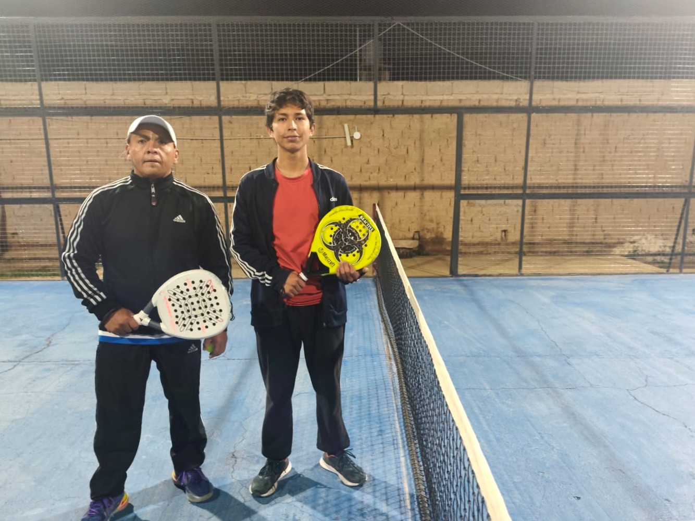
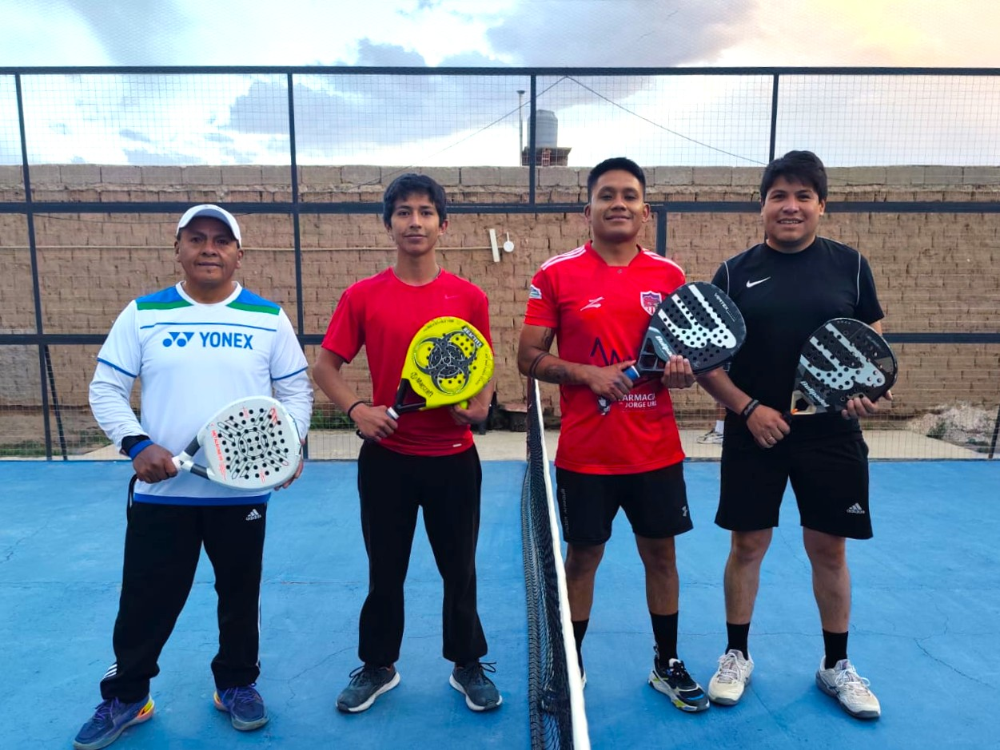
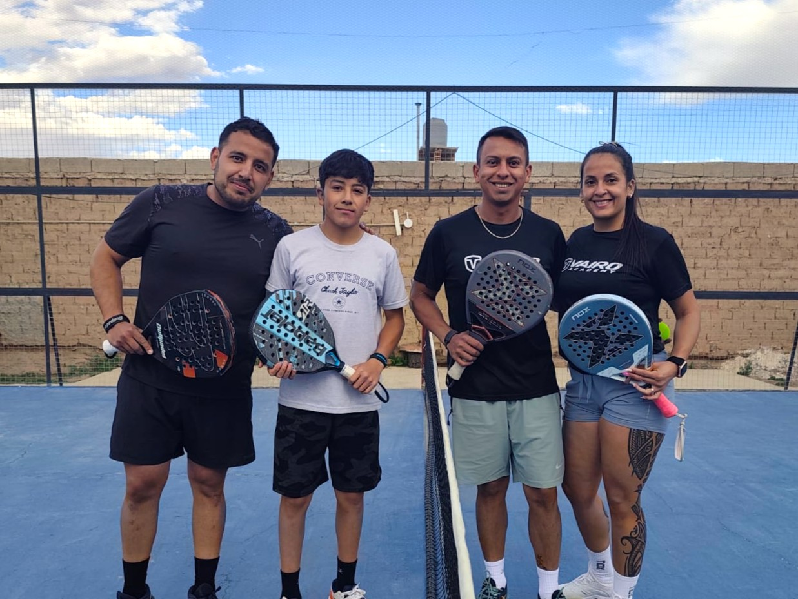
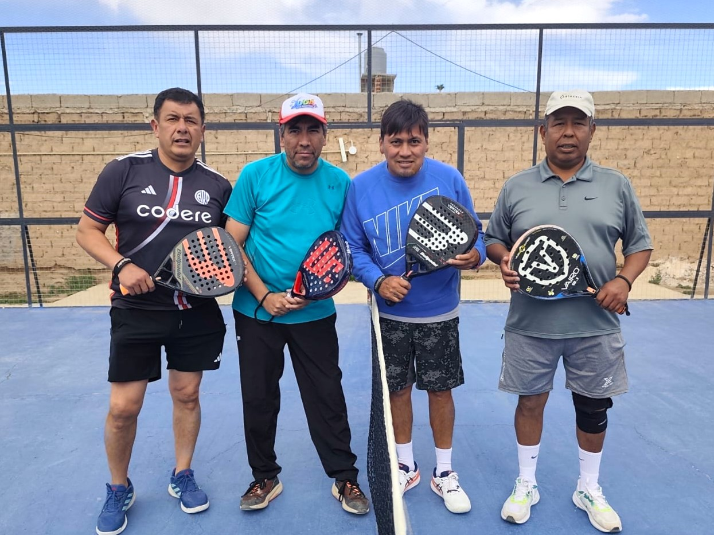

Salpica2 vs. E²
Enzo Cadena · Santiago Cadena
Elvio Quispe · Emilio Cabrera

PIPO Pádel · La Quiaca
Trece duplas activas. Setenta y ocho partidos. El cierre de temporada se juega a fondo.
La copa
El Clausura ya está en marcha. La fase regular será todos contra todos, sin fechas rígidas: cada dupla coordina sus cruces y PIPO confirma la cancha.
La jornada inaugural dejó cuatro resultados y hoy continúan cinco cruces. Seguí aquí los próximos partidos, las crónicas, las fotos y la tabla publicada en vivo.
Próximos partidos
Viernes 27 de noviembre · PIPO Pádel, La Quiaca.
Enzo Cadena · Santiago Cadena
Elvio Quispe · Emilio Cabrera
Debora Bustamante · Walter Cristaldo
Marcelo Soza · David Cadena
Lautaro Sauretti · Pedro Serapio
Gustavo Alderete · Walter Bautista
Cristian Tolaba · Ignacio Moscoso
Debora Bustamante · Walter Cristaldo
Marcelo Urzagasti · Emilio Siquila
Gustavo Alderete · Walter Bautista
Lo que pasó
Ordenados del más reciente al más antiguo.

Yin y Yang aguardó más allá de la tolerancia reglamentaria. La cancha estaba disponible, los rivales presentes y Chico Veloz no había informado su demora.

El primer set fue muy peleado. Boys aprovechó mejor el segundo y, después de la lluvia y el secado de la cancha, resolvió el tercero con mayor seguridad.

El primer set estuvo para cualquiera. En el segundo, Salpica2 tuvo una oportunidad de quiebre cuando estaban 2-4, pero Aguantadora sostuvo la ventaja y cerró un partidazo.

E² se quedó con el partido inaugural. Super 45 levantó su nivel en el segundo set y estuvo cerca de remontarlo, pero no alcanzó.
Protagonistas
Los espacios fotográficos ya están preparados. Subí cada JPG con el nombre indicado en el código.
Clasificación
La tabla se actualiza automáticamente desde la planilla oficial. Victoria: 2 puntos; derrota ganando al menos un set: 1 punto; derrota 0-2 o por W.O.: 0 puntos.
Camino a la final
Primera etapa intensiva. Cada dupla coordina y juega la mayor cantidad posible de sus 12 cruces.
Fecha de corte y revisión de partidos pendientes.
Continuidad de la fase regular para completar el fixture con igualdad deportiva.
Semifinales 1.º vs. 4.º y 2.º vs. 3.º; las fechas se confirmarán al cerrar la fase regular.
Documento oficial
Formato, puntaje, desempates, coordinación, cancha, descansos, W.O., lesiones y conducta en un solo documento.